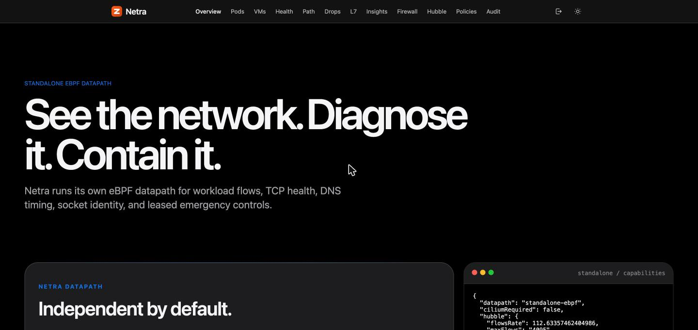

A buyer brochure for enterprises evaluating Netra: how it sees inside a node with eBPF, what happens step by step when traffic starts dropping and how the node's packets are captured as evidence, and everything else it does.
Standalone eBPF for Linux and Kubernetes · Optional Cilium and Hubble enrichment · x86_64 and arm64
Licensed under the Zyvor Production License v1.0: free for evaluation and non-production use, a commercial license for production.

Modern clusters accumulate network tools faster than operators can trust them. CNI dashboards explain policy verdicts. Host stacks still drop packets in softnet, qdisc and the NIC. Emergency denies that never expire become the next outage. Netra is built for that gap.
Netra is standalone eBPF network observability and leased emergency containment for Linux and Kubernetes: observe-first, CNI-independent by default, with optional Cilium and Hubble enrichment.
A privileged DaemonSet that loads the eBPF programs, owns its maps under /sys/fs/bpf/netra, reads them in batches and reports every few seconds. It never touches Cilium-owned maps.
The API, the dashboard, the alert poller, the durable state and the enforcement leases. Active/passive HA with a Kubernetes Lease. Serves the UI over HTTPS by default.
eBPF lets Netra run small, verified programs inside the Linux kernel at the points where packets, sockets and drops already pass. That is how it sees a node without a kernel module, a sidecar in every pod, or a change to any application.
cgroup packet and socket hooks for every workload, TC/TCX on interfaces you choose, XDP if you opt in, tracepoints for drops and TCP events, and uprobes in OpenSSL if you opt in.
Programs write counters and samples into maps and ring buffers. The agent reads big maps in batches and keeps only the top entries, so a busy node costs a few dozen syscalls per read.
The kernel verifier refuses anything unsafe. Each sensor is its own object. Observing programs never change a packet's verdict. Rules that can drop are leased and fail open.
| Typical kernel module | Typical sidecar or proxy | Netra with eBPF | |
|---|---|---|---|
| Sees node-level drops | yes | no | yes: the drop tracepoint, softnet, qdisc |
| Changes to applications | none | one per pod | none |
| Risk to the kernel | a bug can crash the node | lives in user space | the verifier proves each program safe before it runs |
A packet crosses the same layers on every node. Netra places a sensor at each layer that matters and reads the rest from what the kernel already exposes, so the picture of an incident is complete from the wire to the application.
They see every workload's traffic with its identity, on any CNI, without an interface to attach to.
Most packet loss is decided inside the kernel. The tracepoint says which connection, why, and in which function.
It observes packets on the interface you pick without replacing anything, and never changes a verdict.